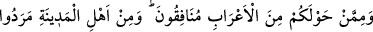
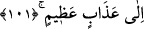

Beden de Allah’ın lütfuyla gönlün tabiatına bürünmede
Bu uzaklık ve kısalık bedene göredir
İlâhî âlemde uzunluk kısalık olur mu?
Allah bedeni değiştirince
Fersaha, mile ihtiyaç olmadan yürür, gider
101. Çevrenizdeki bedevî Araplardan münâfıklar vardır. Medine halkından bir
kısmı da münâfıklığı huy edinmişlerdir. Sen onları bilmezsin, onları biz biliriz.
Onlara iki kere azâb edeceğiz, sonra da onlar, büyük azaba itileceklerdir.
“Çevrenizdeki” yani beldeniz Medine’nin çevresinde bulunan “bedevî Araplardan
münâfıklar vardır.” Bunlar Cüheyne, Müzeyne, Eslem, Eşca‘ ve Gıfâr kabileleridir.
Bunlar Medine’nin etrafında oturuyorlardı.
“Medine halkından bir kısmı da münâfıklığı huy edinmişlerdir.” Nifağı huy
edinmişler, onun üzerinde karar kılmışlar veya münafıklıkta mâhir olmuşlardır.
“Medine” kelimesi mutlak olarak söylendiğinde içerisinde Rasûlullah (s.a.)’in
evinin, minberinin ve kabrinin bulunduğu hicret yurdu anlaşılır.
Medine şehrinin daha birçok ismi vardır. “Tâbe” ve “Taybe” bunlardandır. Şirkten
hali olduğu, emniyet ve refah içinde olmaları sebebiyle orada yaşayanlara hoş geldiği,
orada yaşamak güzel olduğu, toprağı temiz olduğu ya da münâfıklıktan temiz olduğu için
böyle isimlendirilmiştir.
Bir hadiste şöyle buyurulmuştur: “Körüğün demir pasını uzaklaştırıp yok etmesi gibi
(Medine, kötü) insanları uzaklaştırıp yok eder.”[251] Başka bir hadiste ise: “Îmân,
Medine’ye yılanın deliğine eğilip bükülmeden girdiği gibi girer, sığınır.”[252]
buyurulmuştur.
Buradaki Medine’den maksat Şam bölgesinin tamamıdır. Çünkü Medine şehri de Şam
diyarındandır. Hadiste Medine isminin özellikle zikredilmesi, şerefine binaendir. Bu
izaha göre Medine Şam bölgesine aittir.
İbn Melek de bu görüşü benimsemiştir. Nevevî ise şöyle demiştir: Medine, ne Şam’a
ne de Yemen’e aittir, o Hicaz’a aittir. İmam Şâfiî ise, Mekke ve Medine’nin Yemen
bölgesine ait olduğunu söylemiştir.
“Sen onları bilmezsin,” Bu ifade “münâfıklığı huy edinmişlerdir.” ifadesini
açıklamaktadır. Yani münâfıklıkta o derece maharet kazanmışlar ki sen mükemmel bir
zekaya ve kuvvetli bir firasete sahib olmana rağmen onların bu münâfıklığı, sana gizli